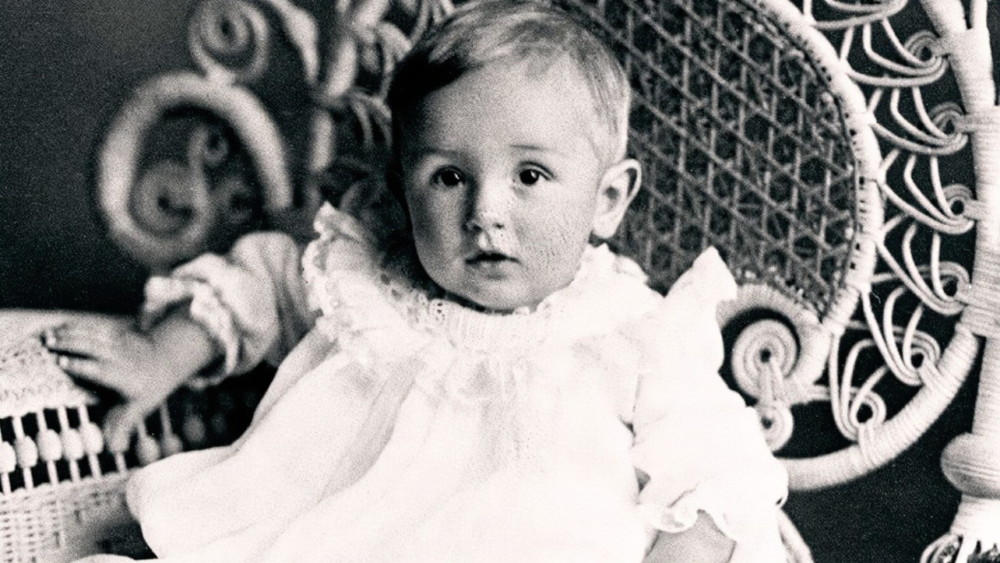

Confira a seguir quem é o responsável pela franquia!
Walter Elias Disney é o nome de batismo do homem que ficou conhecido como Walt Disney.
Walt nasceu em 5 de dezembro de 1901, na cidade de Chicago, e faleceu na cidade de Los Angeles, no dia 15 de dezembro de 1966, aos 65 anos de idade.
Ainda hoje seu nome é fortemente aclamado pelo público e pela mídia. E com toda razão, Walt Disney não foi meramente mais um homem comum.
Ele fez história, e mudou a história da animação infantil.
A sua carreira nessa área de fato se iniciou quando Walt, foi convidado para trabalhar em algumas agências publicitárias e cinematográficas. Nessas agências, ele desempenhava o papel de ilustrador de cartazes de propagandas de filmes.
No início as coisas não foram fáceis, mas logo começaram a produzir pequenas animações que passavam antes de filmes que estavam no cinema. Cresceram e se mudaram para Hollywood. Foi nesse local da cidade de Los Angeles, que as coisas começaram a realmente dar certo.
Walt Disney, juntamente com os seus sócios expandiu os negócios, e contratou mais funcionários.
Depois ter os direitos autorais de Alice roubados pelo seu antigo patrão, Walt Disney precisou dar a volta por cima, e foi exatamente isso que ele fez, criando o personagem icônico: Mickey Mouse.
Nesse ponto da história a produtora, chamada agora estúdios Disney já estava grande e relevante em seu mercado. Foi também nessa época que o filme sonoro foi inventado, surgindo logo em seguida o filme colorido. Os estúdios Disney seguiram as tendências e passaram a utilizar as novas técnicas disponibilizadas.
Em 1929 mais personagens foram criados para contracenar com o famoso Mickey Mouse: Pato Donald, Pateta, Pluto e o vilão João Bafo de Onça.
No total Walt Disney recebeu 22 Oscars e 59 indicações durante a sua vida. Venceu também, 7 Emmy Awards e deixou um verdadeiro reinado na terra, que carrega o seu nome.
Walt Disney faleceu na cidade de Los Angeles, em 15 de dezembro de 1966, aos 65 anos de idade.
A causa de sua morte, foi um avançado câncer de pulmão. Ele deixou para trás sua esposa, Lillian Bounds e duas filhas, Diane Marie e Sharon Mae.
O primeiro parque a ser inaugurado, foi em 1935, na Califórnia. Mas ele infelizmente não viveu o suficiente para ver a inauguração dos demais parques da companhia.
Ludmila Apolinário e Isabelle Myura | DSNT1N | Prof.° Oscar | Programação Web